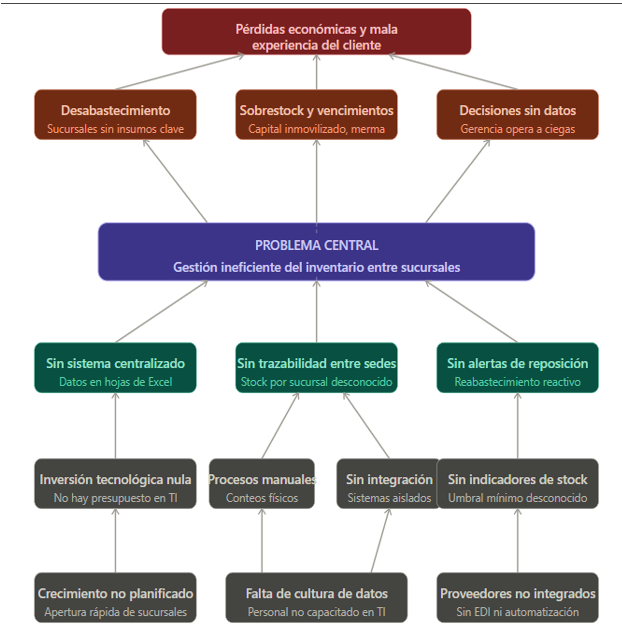
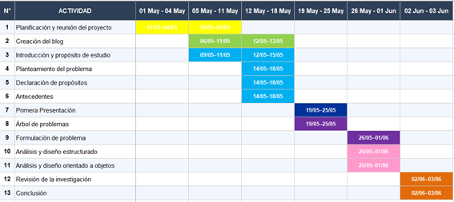
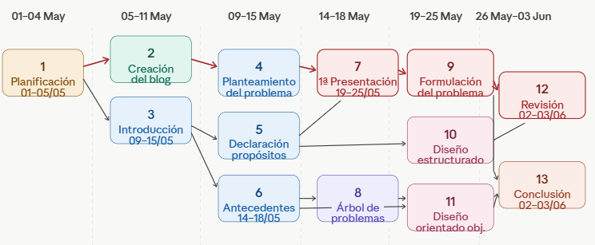
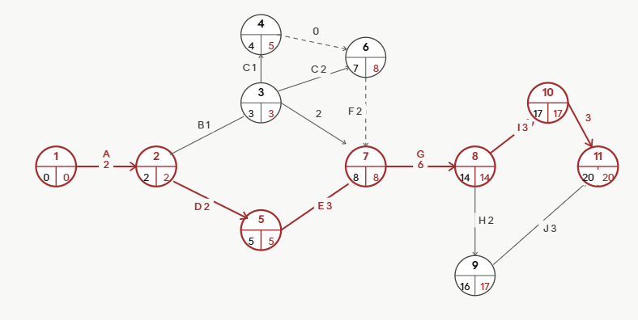

Centro de comida rapida "PAPAYA"
Desde la antigüedad, el control de inventarios ha sido una necesidad fundamental en las empresas, permitiendo llevar una relación detallada, ordenada y valorada de los elementos que componen el patrimonio de una organización o persona natural.
En la actualidad, gracias a la tecnología y las bases de datos sistematizadas, los inventarios son bienes físicos que tienen como objetivo ser distribuidos como objetos de negocio. Son uno de los recursos más importantes para una empresa, ya que aseguran un balance óptimo en los costos generados.
En el rubro de comida rápida, los inventarios solo consideran valores de compra y venta, ya que no es posible hacer devoluciones de los productos. La administración de inventarios es crucial para evitar excesos o faltantes.
El control de inventarios ha sido una necesidad fundamental desde las civilizaciones antiguas, donde ya se llevaban registros básicos de bienes almacenados. Con la Revolución Industrial, estos sistemas evolucionaron significativamente ante el crecimiento de la producción y la complejidad de las cadenas de suministro.
En la era digital actual, el uso de bases de datos, códigos de barras y software especializado permite un control preciso y en tiempo real de las existencias. En el sector de comida rápida, como el Centro "PAPAYA", la gestión de inventarios es particularmente crítica debido a la naturaleza perecedera de los insumos, que imposibilita devoluciones de productos no vendidos.
Estudios indican que una mala administración en este rubro puede generar pérdidas del 20-30% de los ingresos, lo que hace indispensable implementar sistemas eficientes para garantizar la rentabilidad del negocio.
La empresa PAPAYA S.A., dedicada al rubro de comida rápida, enfrenta un desafío significativo en sus costos operacionales debido a la alta dependencia de insumos alimentarios para mantener la producción en funcionamiento, afectando principalmente al área de cocina y atención al cliente, donde el tiempo de preparación no puede ser prolongado.
El alto consumo de insumos representa un costo muy grande para la empresa y genera un impacto negativo en la clientela. Ante esta problemática y con la necesidad de reducir costos y mejorar la línea de producción, se plantea la siguiente pregunta:

¿De qué manera un sistema informático integral puede automatizar y optimizar la gestión del inventario de un puesto de comida rápida, facilitando el registro de insumos y productos, el control de stock, la administración de proveedores, el registro de ventas, así como la generación de reportes gerenciales que apoyen la toma de decisiones estratégicas del negocio, permitiendo mejorar la eficiencia operativa, garantizar información actualizada en tiempo real y respaldar la planificación y crecimiento sostenido del puesto?
OBJETIVO GENERAL
Desarrollar, diseñar e implementar un sistema informático integral que permita automatizar y optimizar la gestión del inventario de un puesto de comida rápida, facilitando el registro de insumos y productos, el control de stock, la administración de proveedores, el registro de ventas, así como la generación de reportes gerenciales que apoyen la toma de decisiones estratégicas del negocio, con el fin de mejorar la eficiencia operativa, garantizar información actualizada en tiempo real y respaldar la planificación y el crecimiento sostenido del puesto.
OBJETIVOS ESPECÍFICOS
Implementar un sistema digital integral para la gestión automatizada de insumos y productos del puesto de comida rápida.
Digitalizar el control de inventario eliminando los registros manuales en papel o planillas físicas.
Establecer un registro preciso y automatizado de todas las entradas y salidas de mercadería en tiempo real.
Implementar un sistema de control de fechas de vencimiento que alerte sobre productos próximos a caducar y evite el desperdicio.
Garantizar el abastecimiento continuo de ingredientes clave mediante alertas automáticas de stock mínimo.
Optimizar los niveles de inventario para evitar el sobre stock en insumos de baja rotación.
Reducir las pérdidas económicas ocasionadas por productos caducados mediante un control eficiente de fechas de vencimiento.
Evitar la pérdida de ventas asegurando la disponibilidad oportuna de todos los ingredientes necesarios para la preparación del menú.
Automatizar la planificación de pedidos a proveedores basados en datos reales de consumo y rotación de inventario.
Automatizar la planificación de pedidos a proveedores basados en datos reales de consumo y rotación de inventario.
Minimizar el desperdicio de alimentos mediante un sistema que optimice el uso de insumos.
Incrementar la confianza y satisfacción del cliente garantizando la disponibilidad permanente de los productos ofertados.
Aumentar los ingresos y la rentabilidad del negocio mediante una gestión eficiente del inventario que reduzca pérdidas y maximice las ventas.
Proveer una herramienta informática de seguimiento que se adapte al ritmo de crecimiento acelerado del negocio.
METODOLOGÍA SCRUM
Scrum es un marco de trabajo ágil, iterativo e incremental basado en tres pilares: transparencia, inspección y adaptación. Divide el proyecto en ciclos cortos llamados Sprints, obteniendo resultados funcionales de forma continua. Para PAPAYA S.A., resulta la metodología más adecuada por su entorno dinámico, permitiendo construir el sistema de manera progresiva y responder con agilidad a los cambios.
ROLES DE SCRUM
Product Owner: Maximiza el valor del software, gestiona y prioriza el Product Backlog. Asumido por la Gerencia de PAPAYA S.A.
Scrum Master: Facilitador y líder al servicio del equipo, elimina obstáculos y asegura la correcta aplicación de Scrum.
Equipo de Desarrollo: Grupo autoorganizado de profesionales que convierten los requerimientos en incrementos de producto entregables.
ARTEFACTOS DE SCRUM
Product Backlog: Lista ordenada y dinámica de todo lo que necesita el sistema (ej: "Módulo de proveedores", "Alertas de stock mínimo", "Reportes de ventas"). Es la única fuente de trabajo y la gestiona el Product Owner.
Sprint Backlog: Subconjunto de tareas seleccionadas del Product Backlog para un Sprint específico (ej: "Diseñar interfaz HTML", "Programar algoritmo de vencimiento"). Es el plan técnico del equipo.
Incremento: Resultado funcional y probado de cada Sprint, que se suma acumulativamente a entregas anteriores (ej: prototipo web que registra ventas y consulta stock en tiempo real).
EVENTOS DE SCRUM
Sprint: Ciclo de trabajo de duración fija (2 semanas para PAPAYA S.A.). Es el contenedor de todos los eventos y produce un incremento utilizable del producto.
Planificación del Sprint: Reunión al inicio del ciclo donde el equipo define qué construir y cómo lograrlo técnicamente.
Daily Scrum: Reunión diaria de 15 minutos donde los desarrolladores responden: ¿Qué hice ayer?, ¿Qué haré hoy? y ¿Tengo algún impedimento?
Sprint Review: Reunión al final del Sprint donde se presenta el incremento funcional a los interesados (Gerencia de PAPAYA S.A.) para recibir retroalimentación.
Sprint Retrospective:Reunión de cierre donde el equipo reflexiona sobre su desempeño y planifica mejoras para el siguiente Sprint.
Diagrama de Gantt

Diagrama de Pert

